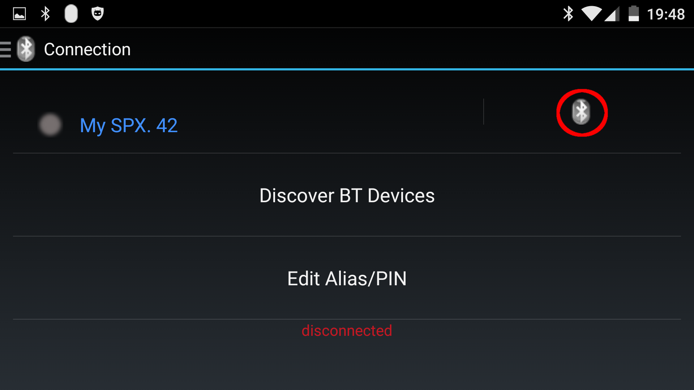
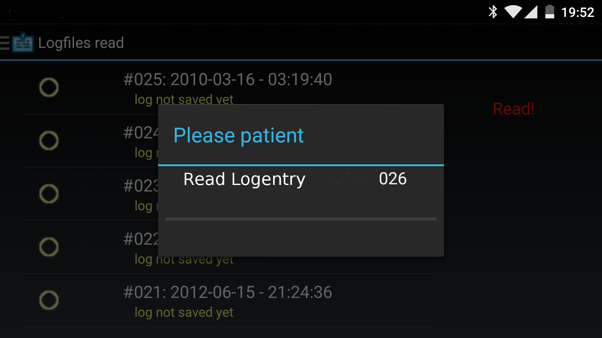
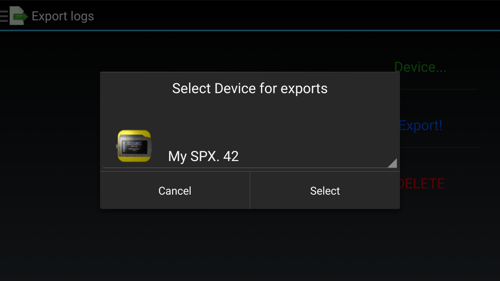

Content
Generally
The SPX.42
The SPX.42 is a completly Trimix (TMX) compatibel diving computer / system controller.
The inbuilt multi-color OLED display (2.4“/320 x 240 pixel) offers optimum
image sharpness and greatest possible angle of vision.
Furthermore the SPX.42 contains:
- A setpoint Controller for the operation of a solenoid (GEM)
- Connection of a TCM (Temperatur Cluster Monitor) only in connection with a solenoid circuit board
- Connection of a Submatix CO2 sensor
- Head Up Display (HUD)
Complete list of details under submatix.com
This App
This app configures the SPX.42 diving computer, programs up to 8 gases in the SPX.42,
reads your dives' diving logs, saves and exports these logs and
displays them graphically.
The app can manage a virtually arbitrary number of SPX.42 diving computers.
This is only limited by the Android device's existing ressources.
Data are saved internally in an SQL database and data files.
Program / App start-up
First start-up
During first program start-up the 'navigator', i.e. the visual navigational
element, will remain visible to demonstrate its existence to the user.
This will only be displayed during first start-up.
First start-up
Program settings
Various of the app's parameters may be adjusted using the menu point 'Program settings'.
Settings are ordered thematically and will be outlined briefly.
Settings dark
Settings bright
Display of units
- There is just one entry here. The entry determines the format of dates and times.
Data system settings
-
Data directory
Points to the directory where files and the log files' database are saved.
-
Clicking opens a context dialog
(Note: Does NOT move files)
-
Show all new log entries
There are two possible settings
eMail configuration
-
Main recipient
- In case log files are to be exported and sent via eMail the recipient's address needs to be filled in here.
-
cc recipient
- Filling in an eMail address here sends a carbon copy of the sent eMail to the filled-in address.
-
compress UDDF
- This option compresses the files to be sent using the ZIP algorithm before sending.
Misc.
-
Change theme
This switch changes between a dark (default, power saving on AMOLED displays) and a bright theme.
The change is immediately.
-
Deactivate BT
This switch determines whether the Bluetooth interface will be deactivated (again) on shut-down
of the program or remain active.
-
Allow online help?
This switch activates/deactives this online help on a mobile device.
This serves to prevent excessive costs on mobile plans with limited data volume.
Connecting to the SPX.42
The SPX.42 must be turned on and the function „synchronization“ must be
selected and activated.
When activating the synchronization the PIN will be displayed briefly. The PIN will
be necessary for the connection process.
From firmware version V2.7_H the SPX.42's current time will be synchronized with the Android device's.
Connecting to the SPX.42
Connecting to new device
To connect the app to a new device that has not been 'paired' yet, i.e. was not
'introduced' to the Android device, a search for Bluetooth devices has to be conducted.
This will be started using the 'Find BT devices' button:
Searching devices
The new device will then be displayed in the list (marked in red here).
") New device (selected)
New device (selected)
Subsequently an alias should be assigned to the device to insure recognizablity
since devices will only use numerical ID when connecting via Bluetooth.
Setting alias and PIN (from Android version 4.4)
Sadly, this easy way of setting the PIN is only possible from Android 4.4.
Android from version 4.03 up to and including version 4.3 will only allow
assigning an alias. 'Pairing' with the PIN must be done using the device's
system function.

View with alias. The alias will be displayed such in all different views.
Connection of the device is via the Bluetooth symbol in the top right corner (marked red)
View connected. (Symbol coloring changed)
Connecting to known device
View with alias. The alias will be displayed such in all different views.
Connection of the device is via the Bluetooth symbol in the top right corner (marked red)
View connected. (Symbol coloring changed)
Expanding the menu
When the device (SPX.42) was connected successfully to the Android device the
menu on the left side of the screen will automatically expand the newly accessible 'online' functions.
Complete menu
SPX.42 Status
In this view the current SPX.42 status is displayed:
Battery voltage, serial number, firmware version and licensing status are displayed.
SPX.42 Status / Lizenzierung
SPX.42 Settings
On land, the SPX.42 can be configured using the Android device's Bluetooth interface.
Only the licensing can be adjusted solely on the SPX.42 itself.
SPX.42 Settings
SETPOINT
-
Autosetpoint
Determine here whether and starting where the setpoint will be activated.
The following settings are possible:
- off
- 5/6 meters (depending on firmware version)
- 10 meters
- 15 meters
- 20 meters
-
Choose desired high setpoint
Here the desired PP02 is set. Setting is valid starting from the depth
chosen in 'auto setpoint'.
The setpoint can of course be adjusted under water at any time.
The following settings are possible:
- 1.0 Bar
- 1.1 Bar
- 1.2 Bar
- 1.3 Bar
- 1.4 Bar
- 1.5 Bar
- 1.6 Bar
DEKOMPRESSION
-
Selection presets
Here the gradients are set according to the following presets:
- very conservative
- standard
- moderate
- aggressive
- very aggressive
- custom
-
Set gradient
If the user wants to set gradients other than presets they can be
configured in the SPX.42 using this setting.
Setting gradients for decrompression
-
Depth for last stop
The last safety/deco stop will be at the preset depth:
-
dyn. gradients
The setting 'Dynamical gradients' influences the gradients in the case of a
bailout with open scuba insofar as an aggressive setting is automatically
chosen to shorten decompression times in that case. (See SPX.42 manual).
The two possible settings are:
-
Deep stops
When activated, deep (short) decompression stops will be considered and displayed here.
There are these two settings:
DISPLAY
-
Brightness
he SPX.42 can preset various display brightnesses.
These can of course be adjusted under water at any time.
Possible values are the following:
- For newer firmware versions
- For older firmware versions
-
Display alignment
Here the SPX.42's display may be rotated by 180 degrees.
The setting will be in effect after finishing synchronisation of the SPX.42.
There are two settings:
- landsc. normal
- landsc. 180°
SPX42 UNITS
-
Unit of temperature
The SPX.42 may use degrees Celsius or Fahrenheit.
There are two settings:
-
Unit for depth
The SPX.42 may use one of two units for the depth.
There are two settings:
-
Water type
The SPX.42's depth calibration is meant for these types of water
Editing gases
The diving computer SPX.42 is capable of saving 8 gases, 2 of may be set as
diluents and all of which may be set as bailout gases. By that a large bandwidth
of applications in different configurations is conceivable.
Below the gase's number is a line with information regarding the saved gases:
the gas number, followed by the gases internationally costumary label for
gas mixtures.
The labels DIL1 and DIL2 stand for dilent No. 1 and No. 2;
the label BO stands for bailtout gas.
After this information the MOD (maximum operation depth) is displayed.
It is calculated with a maximum Ppo2 of 1.6 bar..
Gas settings of the SPX.42 (8 possible gases)
To edit a gas simply tap the respective line and a context dialog will open.
The dialog's options are set by the SPX.42's licensing.
Gas settings for a single gas
Reading logs
The SPX.42 saves diving data in a log file in time intervals that were set in
the device. These logs can be read, saved, exported and displayed graphically
using this app. Logs are saved into an internal database and data files. Export
is done using a special data format (uddf version 2.2.0).
This can be read by logbook programs (such as Diving Log by Sven Koch) and
allows importing diving profile and PPO2 directy into the logbook.
Information under www.divinglog.de

Importing list of logs from SPX.42
Selecting logs for import
Importing and saving of logs after tapping „Import!“
Saved logs are marked with a symbol
Visualizing logs
This app may manage a virtually arbitrary number of diving computers. Thus,
a diving computer has to be selected prior to visualization.
First select device
Selecting the log to be visualized
View complete log
To view details use the costumary Android gestures for zooming.
The visible detail is from the yellow bar on the upper edge:
Zooming in by spreading gesture
Exporting/deleting logs
The logs saved on the SPX.42 may be exported for further use (e.g. in a log program).
Exporting is done wirelessly via wifi or mobile data using eMail. A preset
eMail address is set in the general program settings.
Exporting/deleting

Selecting a device for exporting/deleting operation
Selecting log(s) for exporting/deleting
In this option individual or all logs of an SPX.42 may be deleted from
an Android device. All logs will be deleted (after a warning message)
when no log is selected.
Deleting of all logs